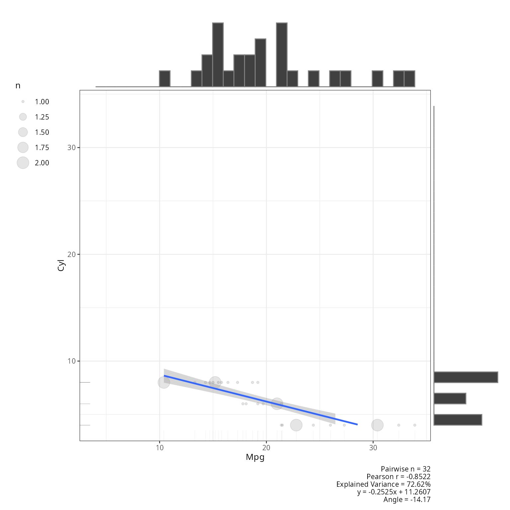
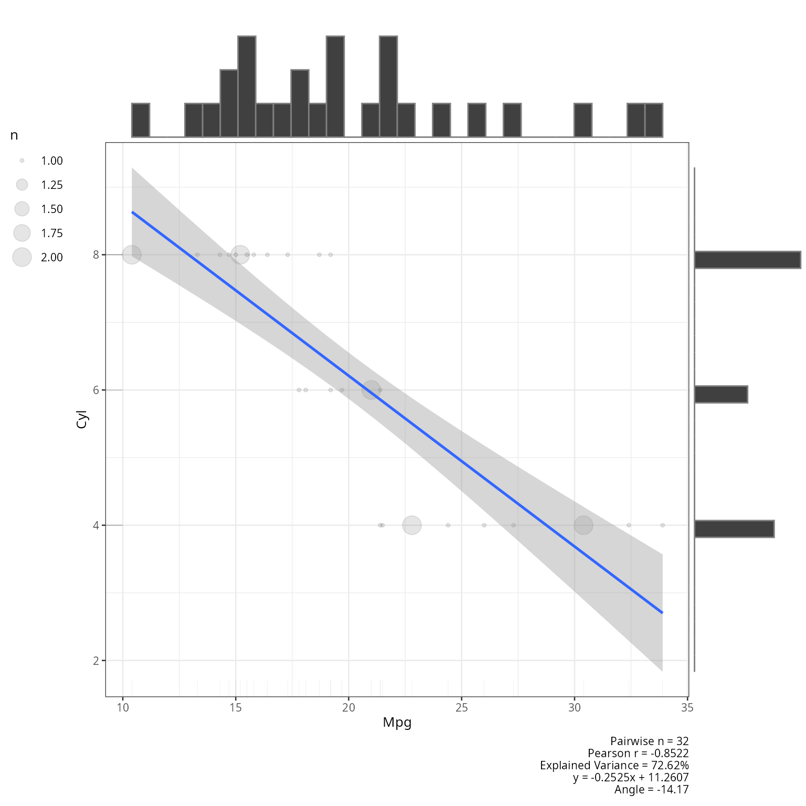
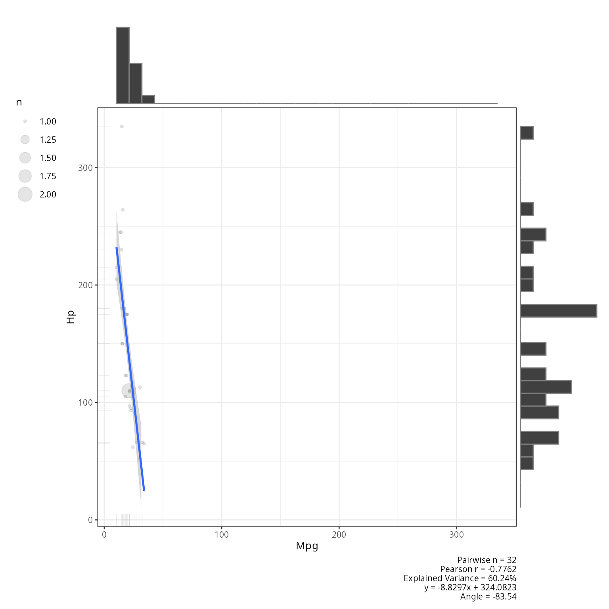
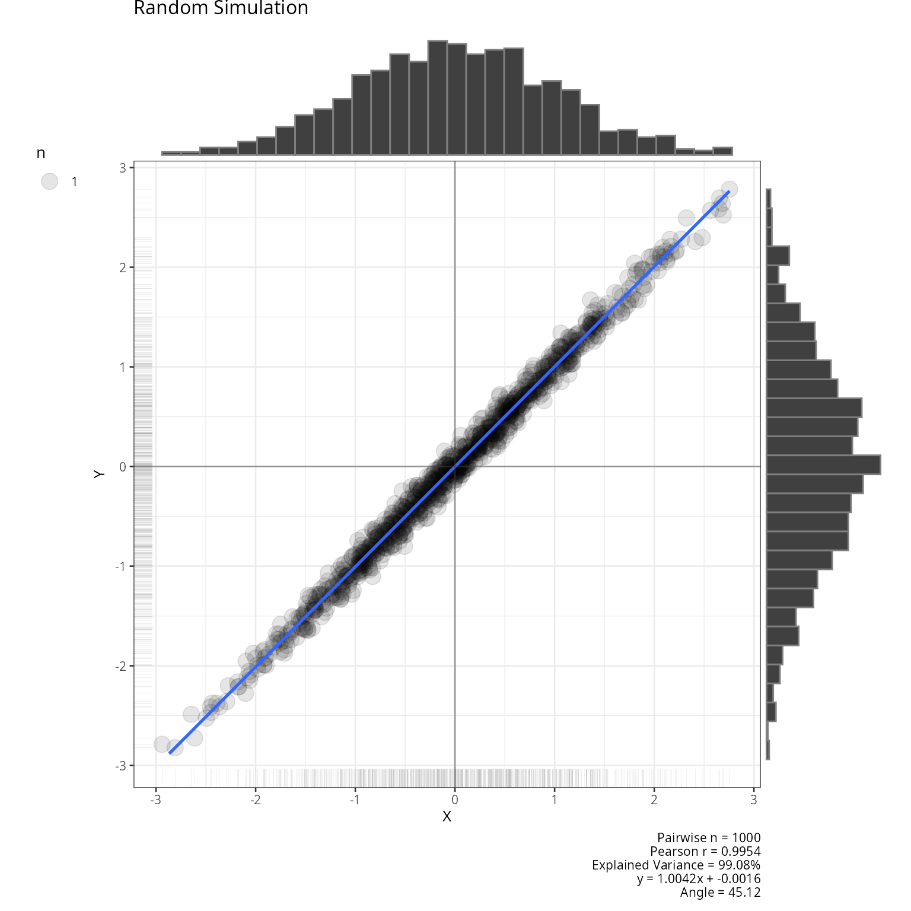
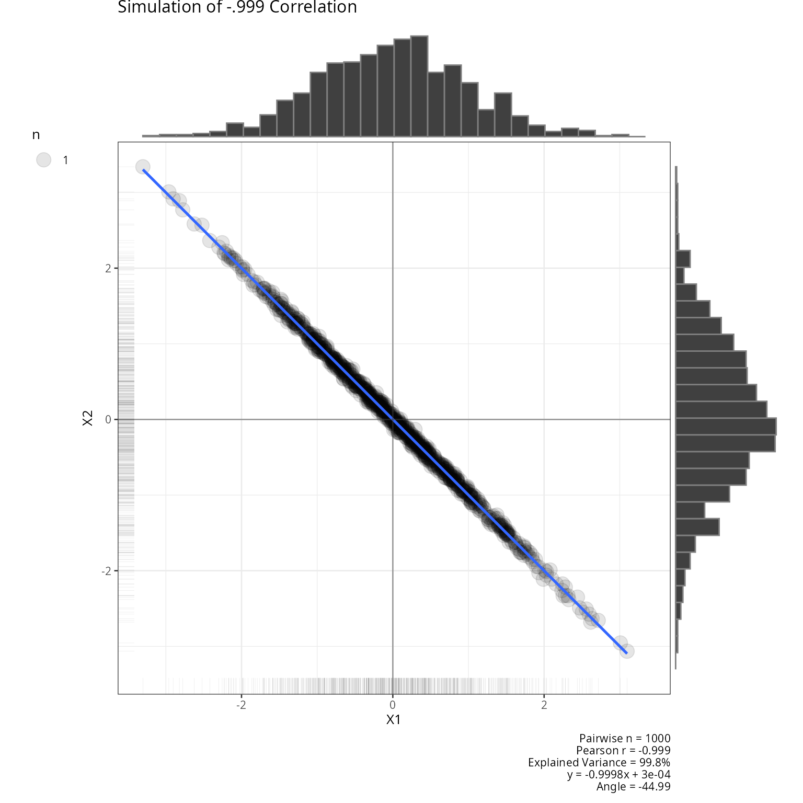
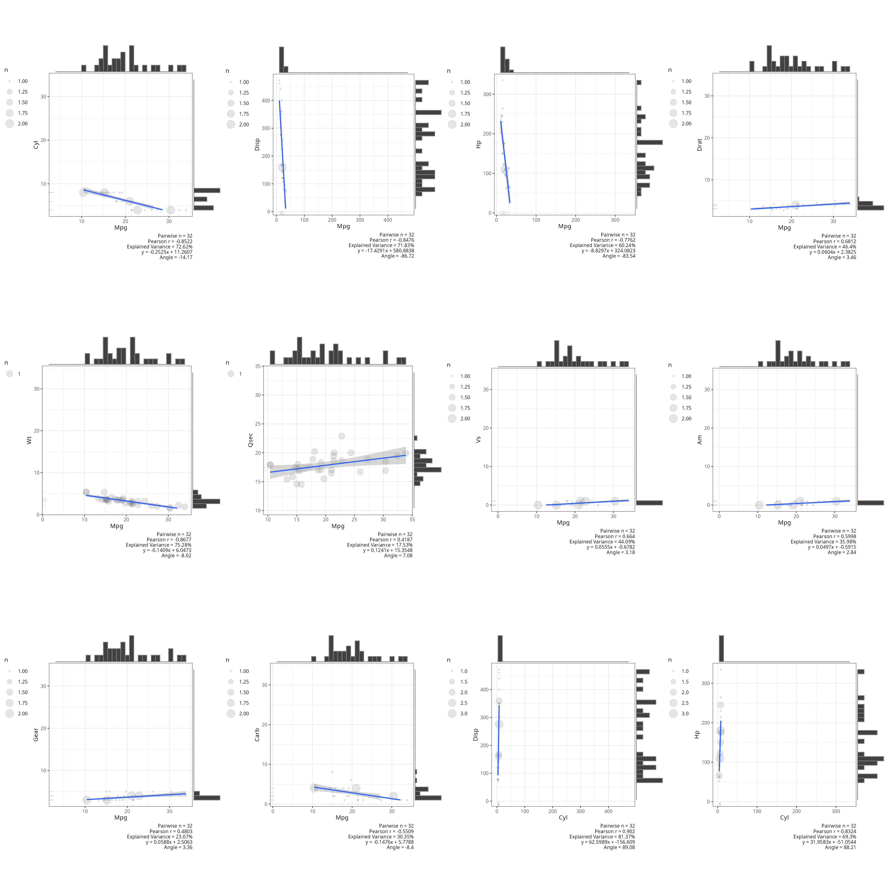
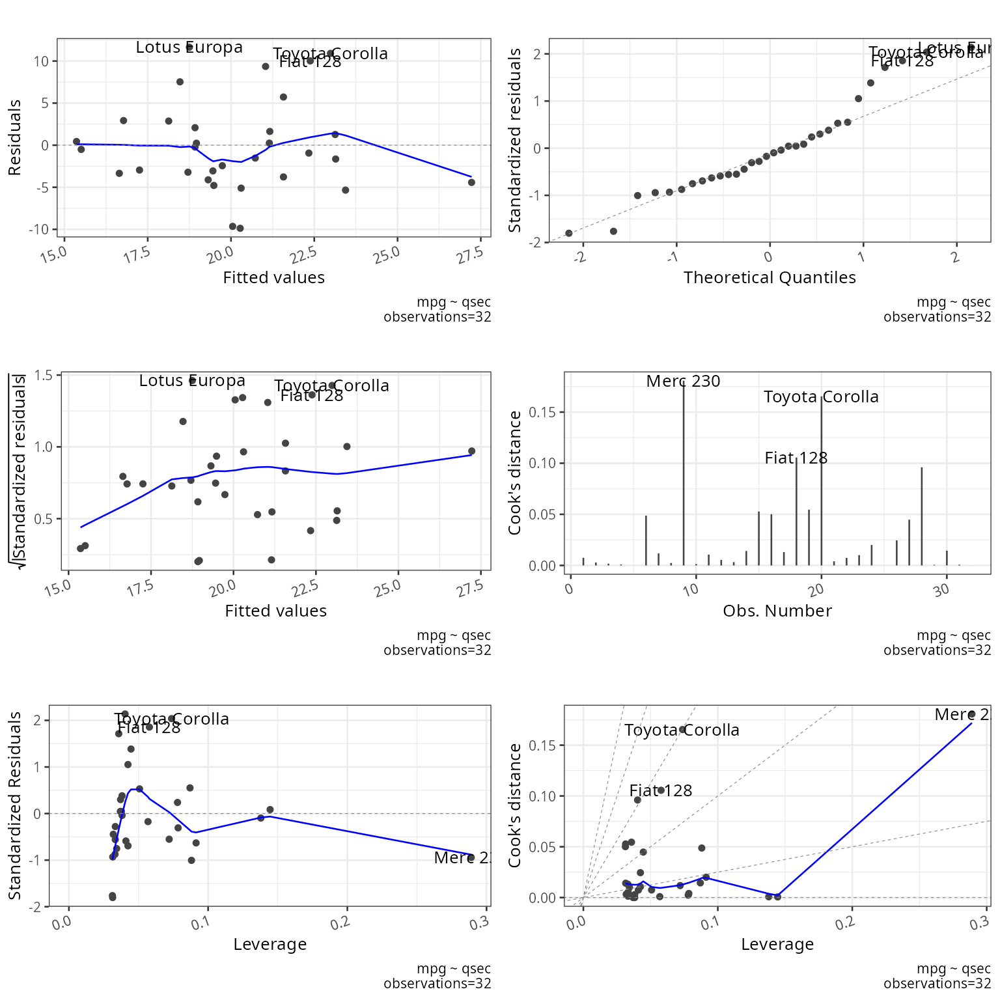
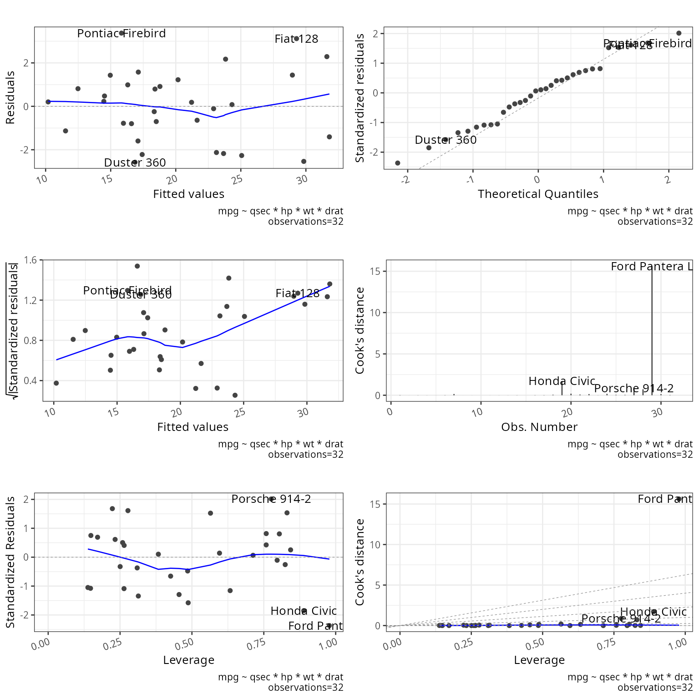

Description
This shows the output of linear regression functions from the package rwf. The functions cover scatterplot visualisation and full regression reporting for both simple and multiple regression models.
Installation instructions for rwf can be found here
The code can be found here
Plot Scatterplot
plot_scatterplot produces scatterplots with a fitted
regression line and confidence band. It supports pairwise plots across
all columns of a dataframe, specific variable combinations, and
symmetric vs. non-symmetric axis scaling.
The examples show:
-
Full
mtcarsmatrix: all pairwise scatterplots stored inresultfor later multiplot use. -
Single pair, equal axes
(
coord_equal = TRUE): both axes share the same scale — useful when variables are on comparable units. -
Single pair, free axes
(
coord_equal = FALSE): each axis scales independently — better for variables with very different ranges. -
Custom combinations: only selected x–y pairs are
plotted using the
combinationsargument, avoiding a full matrix when you only care about specific relationships. -
All orders (
all_orders = TRUE): plots both x~y and y~x for a given pair, showing how the regression line changes with axis assignment. - Random simulation: x and y generated with near-perfect correlation (sd = 0.1 noise) — confirms the function handles near-linear data cleanly.
- Negative correlation simulation: a matrix with r = −0.999 is generated and plotted — a stress test for strong negative linear relationships.
result<-plot_scatterplot(df=mtcars,title="",coord_equal=TRUE,base_size=10)
plot_scatterplot(df=mtcars[,1:2],base_size=10,coord_equal=TRUE,all_orders=FALSE)
plot_scatterplot(df=mtcars[,1:2],base_size=10,coord_equal=FALSE,all_orders=FALSE)
plot_scatterplot(df=mtcars,base_size=10,coord_equal=TRUE,all_orders=FALSE,
combinations=data.frame(x=c("mpg","mpg","mpg"),
y=c("cyl","hp","mpg")))

plot_scatterplot(df=mtcars,base_size=10,coord_equal=TRUE,all_orders=TRUE,
combinations=data.frame(x=c("mpg"),y=c("cyl")))
x<-rnorm(1000)
y<-x+rnorm(x,sd=.1)
plot_scatterplot(df=data.frame(x,y),title="Random Simulation",coord_equal=TRUE)
df<-data.frame(matrix(-.999,ncol=2,nrow=2))
correlation_martix<-as.matrix(df)
diag(correlation_martix)<-1
df<-generate_correlation_matrix(correlation_martix,nrows=1000)
plot_scatterplot(df,title="Simulation of -.999 Correlation",coord_equal=TRUE,base_size=10)
Plot Multiplot
plot_multiplot arranges multiple ggplot objects into a
grid. Here it displays the first 12 pairwise scatterplots from the full
mtcars matrix generated above, laid out in 4 columns. This
is useful for quickly scanning all pairwise relationships in a dataset
side by side.
plot_multiplot(plotlist=result[1:12],cols=4)
Report Regression
report_regression fits a linear model and returns a
structured report with model fit statistics (R², adjusted R², F, p), a
coefficient table with standardized and unstandardized betas, confidence
intervals, and tolerance/VIF collinearity diagnostics.
Two models are demonstrated:
-
Simple regression (
mpg ~ qsec): one predictor, withplot_diagnostics = TRUEto produce residual diagnostic plots (residuals vs. fitted, Q-Q plot, scale-location, leverage). These help assess whether linearity, homoscedasticity, and normality assumptions hold. -
Multiple regression with interactions
(
mpg ~ qsec * hp * wt * drat): all main effects and their two-, three-, and four-way interactions. This tests how the function handles a highly parameterised model and whether collinearity among interaction terms is flagged in the VIF output.
regressionmodel<-lm(stats::formula(mpg~qsec),data=mtcars)
multipleregressionmodel<-lm(mpg~qsec*hp*wt*drat,data=mtcars)
res<-report_regression(model=regressionmodel,plot_diagnostics=TRUE)
## [1] "##################################################"
## [1] "Summary"
## [1] "##################################################"
##
## Call:
## lm(formula = stats::formula(mpg ~ qsec), data = mtcars)
##
## Residuals:
## Min 1Q Median 3Q Max
## -9.8760 -3.4539 -0.7203 2.2774 11.6491
##
## Coefficients:
## Estimate Std. Error t value Pr(>|t|)
## (Intercept) -5.1140 10.0295 -0.510 0.6139
## qsec 1.4121 0.5592 2.525 0.0171 *
## ---
## Signif. codes: 0 '***' 0.001 '**' 0.01 '*' 0.05 '.' 0.1 ' ' 1
##
## Residual standard error: 5.564 on 30 degrees of freedom
## Multiple R-squared: 0.1753, Adjusted R-squared: 0.1478
## F-statistic: 6.377 on 1 and 30 DF, p-value: 0.01708
##
## [1] "##################################################"
## [1] "Coefficients"
## [1] "##################################################"
## [1] "Unstandardized coefficients (b's) indicate the change in the outcome resulting from a unit change in the predictor"
## [2] "Standardized coefficients (for more than one predictors), indicate the change in outcome as a result of a unit change by a standard deviation of the predictor"
## [3] "t-test checks if coefficients are significantly different from 0. Coefficients of 0 indicate no predictor effects"
## [4] "Significance value for t-test"
## [1] "#########################"
## Row.names standardized Estimate Std. Error t value Pr(>|t|) 2.5 % 97.5 %
## 1 qsec 0.418684 1.412125 0.5592101 2.5252133 0.01708199 0.2700654 2.554184
## 2 (Intercept) NA -5.114038 10.0295433 -0.5098974 0.61385436 -25.5970982 15.369022
## [1] "##################################################"
## [1] "ANOVA"
## [1] "##################################################"
## [1] "ANOVA tests for differences between the baseline model (model with no coefficient) and the predictive model (model with coefficient). A significant F shows that the predictor(s) significantly changes model predictability"
## [2] "Significance value for ANOVA"
## [3] "Null hypothesis: no variance explained by the predictor"
## [1] "#########################"
## Analysis of Variance Table
##
## Response: mpg
## Df Sum Sq Mean Sq F value Pr(>F)
## qsec 1 197.39 197.392 6.3767 0.01708 *
## Residuals 30 928.66 30.955
## ---
## Signif. codes: 0 '***' 0.001 '**' 0.01 '*' 0.05 '.' 0.1 ' ' 1
## [1] "##################################################"
## [1] "Deviance"
## [1] "##################################################"
## deviance
## 1 928.6553
## [1] "##################################################"
## [1] "Outliers"
## [1] "##################################################"
## rstudent p bonf.p signif cutoff
## Lotus Europa 2.282331 0.02998961 0.9596677 FALSE 0.05
## [1] "##################################################"
## [1] "Durbin Watson"
## [1] "##################################################"
## [1] "Test the assumption of independent errors.\nTest values may vary between 0 and 4.\nValues above 3 and bellow 1 are problematic.\nValues of 2 are ideal indicating uncorrelated residuals.\n \nA value greater than 2 indicates a negative correlation between adjacent residuals.\nA value less than 2 indicates a positive correlation between adjacent residuals."
## [2] "Autocorrelation"
## [3] "Durbin-Watson Statistic"
## [4] "Significance value for Durbin-Watson Statistic"
## [1] "#########################"
## dw.r dw.dw dw.p dw.alternative
## 1 0.5922771 0.8065068 0 two.sided
## [1] "##################################################"
## [1] "CALL"
## [1] "##################################################"
## call
## 1 lm(mpg ~ qsec,data=mtcars)
## NULL
res<-report_regression(model=multipleregressionmodel)
## [1] "##################################################"
## [1] "Summary"
## [1] "##################################################"
##
## Call:
## lm(formula = mpg ~ qsec * hp * wt * drat, data = mtcars)
##
## Residuals:
## Min 1Q Median 3Q Max
## -2.5752 -1.2004 0.1321 1.0475 3.3723
##
## Coefficients:
## Estimate Std. Error t value Pr(>|t|)
## (Intercept) 1754.76788 1332.32671 1.317 0.206
## qsec -91.66358 72.94035 -1.257 0.227
## hp -14.97597 10.14812 -1.476 0.159
## wt -499.24128 392.14336 -1.273 0.221
## drat -442.97619 328.51075 -1.348 0.196
## qsec:hp 0.82884 0.55545 1.492 0.155
## qsec:wt 25.76290 21.27164 1.211 0.243
## hp:wt 4.22975 2.93589 1.441 0.169
## qsec:drat 23.83671 17.84096 1.336 0.200
## hp:drat 3.98764 2.51452 1.586 0.132
## wt:drat 125.77969 97.63871 1.288 0.216
## qsec:hp:wt -0.22968 0.15916 -1.443 0.168
## qsec:hp:drat -0.22314 0.13653 -1.634 0.122
## qsec:wt:drat -6.57692 5.24821 -1.253 0.228
## hp:wt:drat -1.11655 0.73401 -1.521 0.148
## qsec:hp:wt:drat 0.06106 0.03947 1.547 0.141
##
## Residual standard error: 2.278 on 16 degrees of freedom
## Multiple R-squared: 0.9263, Adjusted R-squared: 0.8571
## F-statistic: 13.4 on 15 and 16 DF, p-value: 2.5e-06
##
## [1] "##################################################"
## [1] "Coefficients"
## [1] "##################################################"
## [1] "Unstandardized coefficients (b's) indicate the change in the outcome resulting from a unit change in the predictor"
## [2] "Standardized coefficients (for more than one predictors), indicate the change in outcome as a result of a unit change by a standard deviation of the predictor"
## [3] "t-test checks if coefficients are significantly different from 0. Coefficients of 0 indicate no predictor effects"
## [4] "Significance value for t-test"
## [1] "#########################"
## Row.names standardized Estimate Std. Error t value Pr(>|t|) 2.5 % 97.5 %
## 1 qsec -2.717754e+01 -91.66357842 7.294035e+01 -1.256692 0.2269029 -2.462902e+02 6.296306e+01
## 2 hp -1.703674e+02 -14.97596573 1.014812e+01 -1.475738 0.1594222 -3.648901e+01 6.537081e+00
## 3 wt -8.105037e+01 -499.24127624 3.921434e+02 -1.273109 0.2211668 -1.330548e+03 3.320655e+02
## 4 drat -3.929849e+01 -442.97618634 3.285108e+02 -1.348437 0.1962972 -1.139388e+03 2.534355e+02
## 5 qsec:hp 2.457432e-01 0.82883521 5.554520e-01 1.492182 0.1551057 -3.486704e-01 2.006341e+00
## 6 qsec:wt 2.930801e+02 25.76289915 2.127164e+01 1.211138 0.2434282 -1.933096e+01 7.085676e+01
## 7 hp:wt 6.866880e-01 4.22975267 2.935894e+00 1.440704 0.1689513 -1.994064e+00 1.045357e+01
## 8 qsec:drat 2.114666e+00 23.83671194 1.784096e+01 1.336066 0.2002207 -1.398444e+01 6.165787e+01
## 9 hp:drat 1.182306e+00 3.98764491 2.514520e+00 1.585847 0.1323373 -1.342900e+00 9.318190e+00
## 10 wt:drat 1.430876e+03 125.77968939 9.763871e+01 1.288215 0.2159897 -8.120513e+01 3.327645e+02
## 11 qsec:hp:wt -3.728817e-02 -0.22968182 1.591600e-01 -1.443087 0.1682885 -5.670860e-01 1.077224e-01
## 12 qsec:hp:drat -1.979589e-02 -0.22314115 1.365331e-01 -1.634337 0.1217071 -5.125784e-01 6.629613e-02
## 13 qsec:wt:drat -1.950004e+00 -6.57691575 5.248208e+00 -1.253174 0.2281474 -1.770262e+01 4.548789e+00
## 14 hp:wt:drat -1.270188e+01 -1.11654543 7.340101e-01 -1.521158 0.1477359 -2.672577e+00 4.394865e-01
## 15 qsec:hp:wt:drat 9.912982e-03 0.06106043 3.946677e-02 1.547135 0.1413804 -2.260538e-02 1.447262e-01
## 16 (Intercept) NA 1754.76788174 1.332327e+03 1.317070 0.2063672 -1.069639e+03 4.579174e+03
## [1] "##################################################"
## [1] "ANOVA"
## [1] "##################################################"
## [1] "ANOVA tests for differences between the baseline model (model with no coefficient) and the predictive model (model with coefficient). A significant F shows that the predictor(s) significantly changes model predictability"
## [2] "Significance value for ANOVA"
## [3] "Null hypothesis: no variance explained by the predictor"
## [1] "#########################"
## Analysis of Variance Table
##
## Response: mpg
## Df Sum Sq Mean Sq F value Pr(>F)
## qsec 1 197.39 197.39 38.0362 1.353e-05 ***
## hp 1 519.76 519.76 100.1548 2.717e-08 ***
## wt 1 222.83 222.83 42.9388 6.653e-06 ***
## drat 1 11.96 11.96 2.3038 0.14857
## qsec:hp 1 1.42 1.42 0.2740 0.60785
## qsec:wt 1 12.93 12.93 2.4908 0.13408
## hp:wt 1 44.06 44.06 8.4894 0.01015 *
## qsec:drat 1 3.74 3.74 0.7210 0.40833
## hp:drat 1 2.84 2.84 0.5465 0.47048
## wt:drat 1 0.70 0.70 0.1356 0.71750
## qsec:hp:wt 1 6.90 6.90 1.3295 0.26583
## qsec:hp:drat 1 4.56 4.56 0.8796 0.36225
## qsec:wt:drat 1 0.32 0.32 0.0613 0.80766
## hp:wt:drat 1 1.18 1.18 0.2273 0.64001
## qsec:hp:wt:drat 1 12.42 12.42 2.3936 0.14138
## Residuals 16 83.03 5.19
## ---
## Signif. codes: 0 '***' 0.001 '**' 0.01 '*' 0.05 '.' 0.1 ' ' 1
## [1] "##################################################"
## [1] "Deviance"
## [1] "##################################################"
## deviance
## 1 83.03333
## [1] "##################################################"
## [1] "Outliers"
## [1] "##################################################"
## rstudent p bonf.p signif cutoff
## Ford Pantera L -2.841787 0.01237028 0.3958488 FALSE 0.05
## [1] "##################################################"
## [1] "Durbin Watson"
## [1] "##################################################"
## [1] "Test the assumption of independent errors.\nTest values may vary between 0 and 4.\nValues above 3 and bellow 1 are problematic.\nValues of 2 are ideal indicating uncorrelated residuals.\n \nA value greater than 2 indicates a negative correlation between adjacent residuals.\nA value less than 2 indicates a positive correlation between adjacent residuals."
## [2] "Autocorrelation"
## [3] "Durbin-Watson Statistic"
## [4] "Significance value for Durbin-Watson Statistic"
## [1] "#########################"
## dw.r dw.dw dw.p dw.alternative
## 1 -0.190954 2.327011 0.802 two.sided
## [1] "##################################################"
## [1] "CALL"
## [1] "##################################################"
## call
## 1 lm(mpg ~ qsec * hp * wt * drat,data=mtcars)
## NULL
res## $r
## r_squared adjusted_r_squared
## 1 0.9262612 0.8571311
##
## $coeficients
## Row.names standardized Estimate Std. Error t value Pr(>|t|) 2.5 % 97.5 %
## 1 qsec -2.717754e+01 -91.66357842 7.294035e+01 -1.256692 0.2269029 -2.462902e+02 6.296306e+01
## 2 hp -1.703674e+02 -14.97596573 1.014812e+01 -1.475738 0.1594222 -3.648901e+01 6.537081e+00
## 3 wt -8.105037e+01 -499.24127624 3.921434e+02 -1.273109 0.2211668 -1.330548e+03 3.320655e+02
## 4 drat -3.929849e+01 -442.97618634 3.285108e+02 -1.348437 0.1962972 -1.139388e+03 2.534355e+02
## 5 qsec:hp 2.457432e-01 0.82883521 5.554520e-01 1.492182 0.1551057 -3.486704e-01 2.006341e+00
## 6 qsec:wt 2.930801e+02 25.76289915 2.127164e+01 1.211138 0.2434282 -1.933096e+01 7.085676e+01
## 7 hp:wt 6.866880e-01 4.22975267 2.935894e+00 1.440704 0.1689513 -1.994064e+00 1.045357e+01
## 8 qsec:drat 2.114666e+00 23.83671194 1.784096e+01 1.336066 0.2002207 -1.398444e+01 6.165787e+01
## 9 hp:drat 1.182306e+00 3.98764491 2.514520e+00 1.585847 0.1323373 -1.342900e+00 9.318190e+00
## 10 wt:drat 1.430876e+03 125.77968939 9.763871e+01 1.288215 0.2159897 -8.120513e+01 3.327645e+02
## 11 qsec:hp:wt -3.728817e-02 -0.22968182 1.591600e-01 -1.443087 0.1682885 -5.670860e-01 1.077224e-01
## 12 qsec:hp:drat -1.979589e-02 -0.22314115 1.365331e-01 -1.634337 0.1217071 -5.125784e-01 6.629613e-02
## 13 qsec:wt:drat -1.950004e+00 -6.57691575 5.248208e+00 -1.253174 0.2281474 -1.770262e+01 4.548789e+00
## 14 hp:wt:drat -1.270188e+01 -1.11654543 7.340101e-01 -1.521158 0.1477359 -2.672577e+00 4.394865e-01
## 15 qsec:hp:wt:drat 9.912982e-03 0.06106043 3.946677e-02 1.547135 0.1413804 -2.260538e-02 1.447262e-01
## 16 (Intercept) NA 1754.76788174 1.332327e+03 1.317070 0.2063672 -1.069639e+03 4.579174e+03
##
## $anova
## Analysis of Variance Table
##
## Response: mpg
## Df Sum Sq Mean Sq F value Pr(>F)
## qsec 1 197.39 197.39 38.0362 1.353e-05 ***
## hp 1 519.76 519.76 100.1548 2.717e-08 ***
## wt 1 222.83 222.83 42.9388 6.653e-06 ***
## drat 1 11.96 11.96 2.3038 0.14857
## qsec:hp 1 1.42 1.42 0.2740 0.60785
## qsec:wt 1 12.93 12.93 2.4908 0.13408
## hp:wt 1 44.06 44.06 8.4894 0.01015 *
## qsec:drat 1 3.74 3.74 0.7210 0.40833
## hp:drat 1 2.84 2.84 0.5465 0.47048
## wt:drat 1 0.70 0.70 0.1356 0.71750
## qsec:hp:wt 1 6.90 6.90 1.3295 0.26583
## qsec:hp:drat 1 4.56 4.56 0.8796 0.36225
## qsec:wt:drat 1 0.32 0.32 0.0613 0.80766
## hp:wt:drat 1 1.18 1.18 0.2273 0.64001
## qsec:hp:wt:drat 1 12.42 12.42 2.3936 0.14138
## Residuals 16 83.03 5.19
## ---
## Signif. codes: 0 '***' 0.001 '**' 0.01 '*' 0.05 '.' 0.1 ' ' 1
##
## $deviance
## deviance
## 1 83.03333
##
## $variance_covariance
## (Intercept) qsec hp wt drat qsec:hp qsec:wt hp:wt qsec:drat hp:drat wt:drat qsec:hp:wt qsec:hp:drat
## (Intercept) 1775094.46689 -97145.564799 -1.276911e+04 -518872.18686 -436345.79921 696.16029575 28068.1184610 3628.9100948 23678.8426647 3089.99140791 127671.480112 -1.952401e+02 -166.49870865
## qsec -97145.56480 5320.295190 6.999534e+02 28411.43938 23888.18911 -38.16693402 -1538.6505858 -199.2139240 -1297.2111542 -169.44986064 -6993.929902 1.072520e+01 9.13137828
## hp -12769.11226 699.953438 1.029843e+02 3750.99973 3171.75048 -5.63339270 -203.2311607 -29.5255282 -172.4073953 -25.38510531 -932.991606 1.596306e+00 1.37445803
## wt -518872.18686 28411.439383 3.751000e+03 153776.41327 128331.56346 -204.39144348 -8330.5048574 -1080.5272154 -6967.4533116 -913.81199716 -38133.833502 5.818519e+01 49.21105993
## drat -436345.79921 23888.189106 3.171750e+03 128331.56346 107919.31555 -172.93927582 -6948.7447057 -908.0534609 -5858.8339653 -773.35540170 -31799.302097 4.890958e+01 41.68773134
## qsec:hp 696.16030 -38.166934 -5.633393e+00 -204.39144 -172.93928 0.30852692 11.0688356 1.6124078 9.4032685 1.38993613 50.836544 -8.723061e-02 -0.07537428
## qsec:wt 28068.11846 -1538.650586 -2.032312e+02 -8330.50486 -6948.74471 11.06883559 452.4825628 58.8257531 377.6972760 49.56659412 2068.384113 -3.171778e+00 -2.66767391
## hp:wt 3628.91009 -199.213924 -2.952553e+01 -1080.52722 -908.05346 1.61240782 58.8257531 8.6194712 49.4334400 7.33542529 271.173257 -4.669722e-01 -0.39648332
## qsec:drat 23678.84266 -1297.211154 -1.724074e+02 -6967.45331 -5858.83397 9.40326854 377.6972760 49.4334400 318.3000180 42.06999526 1727.316279 -2.664842e+00 -2.26858032
## hp:drat 3089.99141 -169.449861 -2.538511e+01 -913.81200 -773.35540 1.38993613 49.5665941 7.3354253 42.0699953 6.32281173 229.152062 -3.974112e-01 -0.34295589
## wt:drat 127671.48011 -6993.929902 -9.329916e+02 -38133.83350 -31799.30210 50.83654373 2068.3841126 271.1732569 1727.3162788 229.15206239 9533.317441 -1.462017e+01 -12.34302494
## qsec:hp:wt -195.24013 10.725198 1.596306e+00 58.18519 48.90958 -0.08723061 -3.1717784 -0.4669722 -2.6648418 -0.39741125 -14.620167 2.533192e-02 0.02150049
## qsec:hp:drat -166.49871 9.131378 1.374458e+00 49.21106 41.68773 -0.07537428 -2.6676739 -0.3964833 -2.2685803 -0.34295589 -12.343025 2.150049e-02 0.01864129
## qsec:wt:drat -6827.35797 374.454141 4.998774e+01 2043.05191 1702.78453 -2.72261797 -111.1378238 -14.6102947 -92.6120005 -12.29997575 -511.591103 7.889530e-01 0.66224905
## hp:wt:drat -874.09801 48.019350 7.258150e+00 262.62898 220.71308 -0.39668541 -14.3262599 -2.1410677 -12.0284497 -1.82433320 -66.557503 1.162762e-01 0.09876548
## qsec:hp:wt:drat 46.27866 -2.544291 -3.871177e-01 -13.92659 -11.70852 0.02117718 0.7608856 0.1145361 0.6387739 0.09763632 3.536642 -6.231388e-03 -0.00529346
## qsec:wt:drat hp:wt:drat qsec:hp:wt:drat
## (Intercept) -6827.3579658 -874.09801039 46.278655763
## qsec 374.4541415 48.01934952 -2.544291061
## hp 49.9877373 7.25815030 -0.387117743
## wt 2043.0519062 262.62897560 -13.926585689
## drat 1702.7845265 220.71308207 -11.708515627
## qsec:hp -2.7226180 -0.39668541 0.021177176
## qsec:wt -111.1378238 -14.32625987 0.760885595
## hp:wt -14.6102947 -2.14106771 0.114536070
## qsec:drat -92.6120005 -12.02844970 0.638773901
## hp:drat -12.2999757 -1.82433320 0.097636321
## wt:drat -511.5911034 -66.55750318 3.536642241
## qsec:hp:wt 0.7889530 0.11627619 -0.006231388
## qsec:hp:drat 0.6622490 0.09876548 -0.005293460
## qsec:wt:drat 27.5436891 3.59589688 -0.191464345
## hp:wt:drat 3.5958969 0.53877082 -0.028932233
## qsec:hp:wt:drat -0.1914643 -0.02893223 0.001557626
##
## $outlier_test
## rstudent p bonf.p signif cutoff
## Ford Pantera L -2.841787 0.01237028 0.3958488 FALSE 0.05
##
## $durbin_watson
## dw.r dw.dw dw.p dw.alternative
## 1 -0.190954 2.327011 0.802 two.sided
##
## $vif
## data frame with 0 columns and 0 rows
##
## $call
## call
## 1 lm(mpg ~ qsec * hp * wt * drat,data=mtcars)
##
## $diagnostics
## simple_residuals standard_residuals student_residuals fitted cooks_distance dffits hatvalues covariance_ratio dfbeta.(Intercept) dfbeta.qsec dfbeta.hp dfbeta.wt
## Mazda RX4 -2.12697306 -1.08816432 -1.09490418 23.12697 2.651688e-02 -0.65539453 0.2637886 1.1147697 -443.983537 23.89441450 2.90820404 129.8781460
## Mazda RX4 Wag -0.64116616 -0.32507258 -0.31579474 21.64117 2.205828e-03 -0.18250315 0.2503681 3.3695077 -126.335941 6.82687528 0.81388964 37.9188967
## Datsun 710 -2.26562748 -1.07701837 -1.08280769 25.06563 1.252330e-02 -0.45003631 0.1472959 0.9878674 -8.341294 0.07907045 0.03011934 0.7094257
## Hornet 4 Drive 1.22467268 0.61377316 0.60140548 20.17533 7.145658e-03 0.33131462 0.2328296 2.5003719 -78.579366 4.30293395 0.30815297 20.3517661
## Hornet Sportabout 1.57706791 0.75024407 0.73954545 17.12293 6.137217e-03 0.30889297 0.1485421 1.8597021 -70.892184 3.89658870 0.58475395 24.4685142
## Valiant -0.24479978 -0.25641315 -0.24878264 18.34480 1.928731e-02 -0.53898361 0.8243658 14.9705538 -83.510337 4.83386318 0.42096217 36.8974461
## Duster 360 -2.57524107 -1.57823113 -1.66303595 16.87524 1.477546e-01 -1.62017337 0.4869471 0.3651278 -509.273409 27.96268404 5.49877271 180.6421723
## Merc 240D 0.07889755 0.06460062 0.06255745 24.32110 6.466424e-04 0.09849958 0.7125772 9.7302890 15.043109 -0.75891740 -0.11309340 -3.4760683
## Merc 230 -0.10897415 -0.10601942 -0.10268894 22.90897 2.748192e-03 -0.20310555 0.7964160 13.6405736 17.842675 -0.92023572 -0.11659547 -7.9428636
## Merc 280 0.79574451 0.40722969 0.39635788 18.40426 3.722391e-03 0.23753032 0.2642403 3.2309191 14.305852 -0.86477658 0.03257376 -8.0380994
## Merc 280C -0.70206615 -0.37089119 -0.36066762 18.50207 3.854579e-03 -0.24149554 0.3095526 3.5426564 26.268491 -1.29936222 -0.29171670 -4.1927932
## Merc 450SE 1.43105667 0.69027399 0.67853462 14.96894 6.177229e-03 0.30903476 0.1717943 2.0904788 109.650330 -6.25415175 -1.26357886 -30.5187499
## Merc 450SL 0.98840621 0.50401056 0.49192683 16.31159 5.547312e-03 0.29077840 0.2589301 2.9335456 30.363795 -1.61279167 -0.26091118 -5.1839345
## Merc 450SLC -0.78011250 -0.47723448 -0.46540458 15.98011 1.341100e-02 -0.45174098 0.4851053 4.3362937 19.531813 -1.22004958 -0.33961577 -10.8079756
## Cadillac Fleetwood 0.20299351 0.14017241 0.13580476 10.19701 1.810754e-03 0.16490818 0.5958833 6.8141922 -36.595959 2.03757745 0.49588538 11.1510254
## Lincoln Continental -1.13196379 -0.65579879 -0.64368433 11.53196 1.994033e-02 -0.55440669 0.4258949 3.1632543 -16.212986 0.69952800 -0.06592689 5.8529418
## Chrysler Imperial 0.22819285 0.25294189 0.24540107 14.47181 2.149841e-02 0.56900866 0.8431697 16.7953005 61.156320 -3.26540852 -1.10785863 -20.1978399
## Fiat 128 3.11932125 1.61079068 1.70390589 29.28068 6.224794e-02 1.05567193 0.2773807 0.2291303 -149.588223 9.28260473 1.10262400 49.3770607
## Honda Civic -1.40574469 -1.85160052 -2.02254442 31.80574 1.714974e+00 -5.72189123 0.8889328 0.5335675 -468.189862 31.88134906 2.52247915 123.2003325
## Toyota Corolla 2.28930228 1.52289327 1.59462810 31.61070 1.879270e-01 1.81570164 0.5645534 0.5264861 636.379949 -34.70858349 -3.97200349 -203.9512341
## Toyota Corona -2.17349109 -1.29271366 -1.32264006 23.67349 8.729279e-02 -1.20917317 0.4552734 0.8825975 684.825298 -37.82507079 -3.54286191 -190.8766511
## Dodge Challenger -1.59670900 -1.15680729 -1.17007324 17.09671 1.441892e-01 -1.53630835 0.6328893 1.8912023 223.632461 -11.46315998 -1.05445063 -94.0060221
## AMC Javelin -2.21948633 -1.04944956 -1.05301282 17.41949 1.103048e-02 -0.42153080 0.1381149 1.0409834 91.988650 -4.88939578 -0.86321526 -34.2761173
## Camaro Z28 0.81297694 0.80613778 0.79689061 12.48702 1.666332e-01 1.61409903 0.8040228 7.3812974 -437.547172 24.07817746 5.64992167 150.8298367
## Pontiac Firebird 3.37231073 1.67960818 1.79189996 15.82769 5.066313e-02 0.96053184 0.2232044 0.1622962 264.022136 -15.14948888 -3.31279565 -72.2678769
## Fiat X1-9 -2.53630654 -1.34379574 -1.38141202 29.83631 5.155354e-02 -0.93363946 0.3135570 0.6021663 580.957906 -32.62541324 -4.26821148 -174.3232776
## Porsche 914-2 2.17219836 2.01357168 2.25636851 23.82780 8.766045e-01 4.19666963 0.7757501 0.1167062 -2212.645818 120.13774954 10.20277334 618.0493505
## Lotus Europa 1.43860014 1.53468919 1.60910212 28.96140 7.221843e-01 3.56407789 0.8306805 1.2979909 1491.800498 -79.61748534 -8.61052115 -393.1640002
## Ford Pantera L -0.79796966 -2.36632061 -2.84178716 16.59797 1.562110e+01 -18.98601503 0.9780874 0.1302363 -2003.245478 111.75459416 28.27324426 463.8606091
## Ferrari Dino 0.91431145 0.81653382 0.80761129 18.78569 1.308024e-01 1.43085656 0.7583941 5.8828804 -960.031072 52.56364634 8.48322263 263.2044773
## Maserati Bora 0.47535086 0.42439619 0.41325242 14.52465 3.530908e-02 0.73189225 0.7582574 9.6926181 10.457489 -0.54485037 0.13960691 -10.3809551
## Volvo 142E 0.18522756 0.10353029 0.10027637 21.21477 4.161954e-04 0.07903870 0.3832007 4.5046301 43.991920 -2.43513752 -0.27550685 -13.6262614
## dfbeta.drat dfbeta.qsec:hp dfbeta.qsec:wt dfbeta.hp:wt dfbeta.qsec:drat dfbeta.hp:drat dfbeta.wt:drat dfbeta.qsec:hp:wt dfbeta.qsec:hp:drat dfbeta.qsec:wt:drat dfbeta.hp:wt:drat
## Mazda RX4 106.0116281 -0.157697601 -6.83512329 -0.804304889 -5.65547298 -0.685385034 -31.2292674 0.0424304499 0.0367893243 1.616592885 0.187154086
## Mazda RX4 Wag 30.7819649 -0.043961563 -1.99920485 -0.228148678 -1.64261448 -0.190071822 -9.3645221 0.0119578616 0.0100911512 0.484109758 0.052835696
## Datsun 710 -0.1536841 0.002394206 0.06861911 0.007947272 0.11362615 0.034240848 0.3842894 -0.0016189107 -0.0031686886 -0.051150268 -0.013972377
## Hornet 4 Drive 18.8600509 -0.014936417 -1.08744006 -0.082819967 -1.01039826 -0.062609451 -4.8599566 0.0038643104 0.0027191740 0.251731149 0.016216549
## Hornet Sportabout 17.7181998 -0.029138765 -1.40589004 -0.208437184 -0.96299816 -0.143025892 -6.1385371 0.0111080176 0.0069592256 0.350093583 0.051550990
## Valiant 22.2705957 -0.022570478 -2.20271141 -0.197735257 -1.28097647 -0.112813791 -9.8428008 0.0114006166 0.0059726584 0.586110067 0.053471029
## Duster 360 143.0660930 -0.306164595 -9.59296587 -1.767031600 -7.76789339 -1.504836058 -50.4907711 0.0959982048 0.0829372132 2.658893458 0.483404354
## Merc 240D -3.2285441 0.006437236 0.14613855 0.021216093 0.15978011 0.026704444 0.6357613 -0.0010230571 -0.0015593249 -0.021307914 -0.003851728
## Merc 230 -5.4714346 0.006270459 0.40583095 0.041402059 0.28456396 0.032253725 2.4909804 -0.0021251719 -0.0017406894 -0.127905305 -0.011659644
## Merc 280 -5.1165340 -0.001526850 0.47606385 0.020480854 0.29522466 0.003232421 2.6635405 -0.0014115671 -0.0002451523 -0.153251508 -0.009947173
## Merc 280C -4.9161228 0.015642717 0.14050089 0.044890016 0.23094704 0.055348571 0.4152396 -0.0018657364 -0.0028831405 0.002617145 -0.004144130
## Merc 450SE -28.0327993 0.069344131 1.74741235 0.364589919 1.56758075 0.311606018 7.8899227 -0.0199739111 -0.0167808882 -0.441483675 -0.090242291
## Merc 450SL -6.3468576 0.017622253 0.12509464 0.006787306 0.32887650 0.053339024 0.8438151 -0.0001702248 -0.0037484201 -0.001791084 0.003131917
## Merc 450SLC -7.3090784 0.013148908 0.87063652 0.211985471 0.43449204 0.104500101 3.5876538 -0.0118997118 -0.0042266826 -0.269073657 -0.060958014
## Cadillac Fleetwood 9.7350627 -0.028497245 -0.62259002 -0.150036616 -0.54642924 -0.133557220 -2.9879665 0.0086357133 0.0077128686 0.168219449 0.040652430
## Lincoln Continental 4.1181958 0.007816572 -0.27404820 0.008804541 -0.16686183 0.020176978 -1.4732472 -0.0016365820 -0.0023055788 0.065225768 -0.003490558
## Chrysler Imperial -17.5923104 0.063369586 1.14015607 0.360101207 0.99008348 0.324810650 5.8298985 -0.0210318958 -0.0189969605 -0.344713015 -0.106024406
## Fiat 128 33.2061434 -0.057697681 -3.29802871 -0.431983159 -2.03638037 -0.239411414 -11.4037173 0.0250509135 0.0117076560 0.769517932 0.103020135
## Honda Civic 102.7770042 -0.174415214 -8.57439774 -0.645361486 -7.25322257 -0.575903256 -25.8211360 0.0458415654 0.0413031644 1.892346304 0.142757096
## Toyota Corolla -179.0222869 0.207601064 11.27449153 1.314549650 9.71354347 1.072475115 57.7748052 -0.0703518832 -0.0553608451 -3.178377477 -0.358027972
## Toyota Corona -161.8386910 0.198342313 10.42457066 0.959305085 8.91554630 0.856248383 44.5602069 -0.0528094410 -0.0481032648 -2.413217351 -0.226210320
## Dodge Challenger -58.7539619 0.063853432 4.30172993 0.255024279 2.99139218 0.270385578 24.7557235 -0.0115818058 -0.0162998031 -1.126468678 -0.065701889
## AMC Javelin -23.9739948 0.046450539 1.74114759 0.266356623 1.25978658 0.221491662 8.8610298 -0.0137622341 -0.0117660677 -0.445153165 -0.067991165
## Camaro Z28 130.0915458 -0.310934179 -8.18638795 -1.813442477 -7.10673818 -1.654788816 -43.8771165 0.0989916157 0.0906302879 2.368059739 0.527150841
## Pontiac Firebird -68.8221278 0.179957169 4.29076143 1.000237193 3.86998708 0.829679490 19.1588168 -0.0551839330 -0.0442571865 -1.110738316 -0.252178187
## Fiat X1-9 -142.2113401 0.231756934 9.75916764 1.268823347 7.85605119 1.015250633 42.8837796 -0.0688117405 -0.0537917320 -2.360431941 -0.303478604
## Porsche 914-2 554.5305089 -0.558696263 -33.32501828 -2.728134069 -29.99310396 -2.472069941 -154.3008767 0.1472894332 0.1347448274 8.273299366 0.652634256
## Lotus Europa -329.9938043 0.459173804 20.93153193 2.249711441 17.58889407 1.904576921 84.0610137 -0.1189795478 -0.1005844847 -4.472396668 -0.484548660
## Ford Pantera L 569.5171343 -1.563331591 -25.65449486 -7.062267457 -31.39239869 -7.815411469 -132.1314231 0.3880573281 0.4288733723 7.201854965 1.945129737
## Ferrari Dino 223.4645057 -0.464180896 -14.02821355 -2.222695631 -12.07657549 -1.910159445 -60.4398102 0.1183835738 0.1028399932 3.149830961 0.486400050
## Maserati Bora -1.1092137 -0.009254615 0.55966168 0.014735640 0.04582551 -0.048834061 1.9062130 -0.0003458425 0.0031925067 -0.099693802 0.002222812
## Volvo 142E -10.8206496 0.014167827 0.75746061 0.086364403 0.58646953 0.060780863 3.4124306 -0.0045143112 -0.0029504850 -0.185936212 -0.019594162
## dfbeta.qsec:hp:wt:drat effects
## Mazda RX4 -9.661717e-03 -113.64973741
## Mazda RX4 Wag -2.687048e-03 14.04962378
## Datsun 710 1.144444e-03 -22.79827810
## Hornet 4 Drive -6.462635e-04 14.92764139
## Hornet Sportabout -2.705714e-03 3.45771788
## Valiant -3.068420e-03 -1.19241544
## Duster 360 -2.602166e-02 -3.59532094
## Merc 240D 1.690093e-04 6.63751764
## Merc 230 5.949401e-04 -1.93440708
## Merc 280 6.280829e-04 1.68400359
## Merc 280C 3.383369e-05 -0.83892551
## Merc 450SE 4.843569e-03 2.62672533
## Merc 450SL -2.475198e-04 -2.13653899
## Merc 450SLC 3.403508e-03 0.56383925
## Cadillac Fleetwood -2.351649e-03 1.08600574
## Lincoln Continental 5.283891e-04 3.52447551
## Chrysler Imperial 6.318475e-03 0.91110977
## Fiat 128 -5.879677e-03 4.92141610
## Honda Civic -1.066476e-02 -0.09034867
## Toyota Corolla 1.897297e-02 4.70201499
## Toyota Corona 1.240132e-02 -1.99166765
## Dodge Challenger 2.936468e-03 -1.27149775
## AMC Javelin 3.457485e-03 -1.92812887
## Camaro Z28 -2.864848e-02 2.54706987
## Pontiac Firebird 1.366798e-02 3.04418038
## Fiat X1-9 1.605944e-02 -0.59281340
## Porsche 914-2 -3.492730e-02 1.38305012
## Lotus Europa 2.532652e-02 1.25317778
## Ford Pantera L -1.059368e-01 -1.17720658
## Ferrari Dino -2.515548e-02 2.13472714
## Maserati Bora -2.770040e-04 0.95401244
## Volvo 142E 9.771126e-04 0.34972736